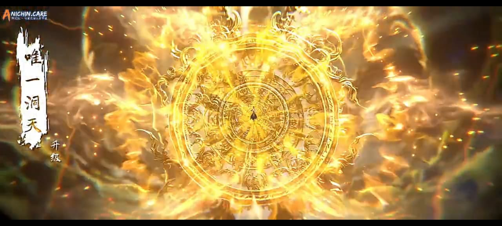
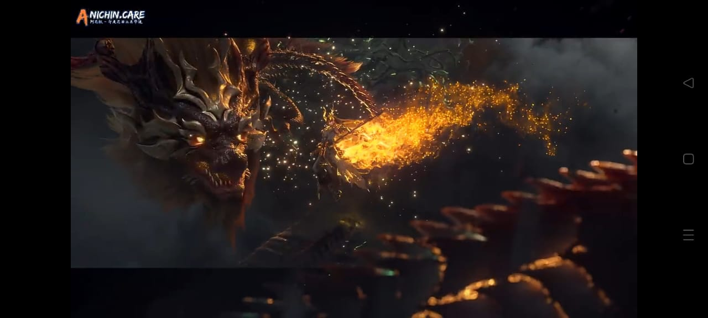
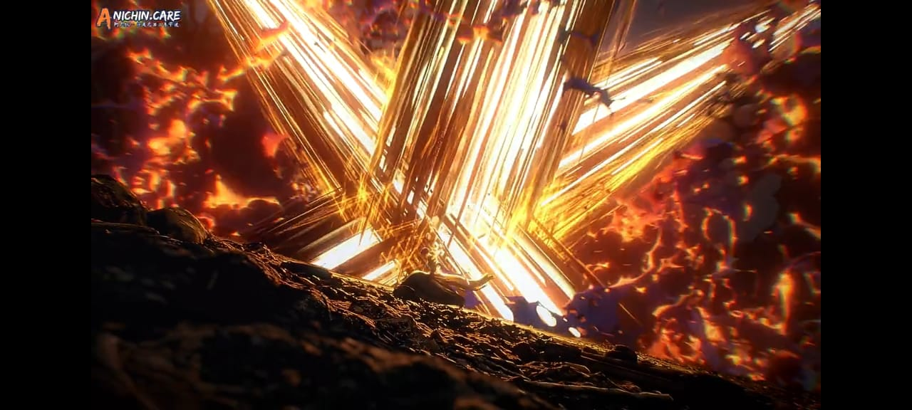
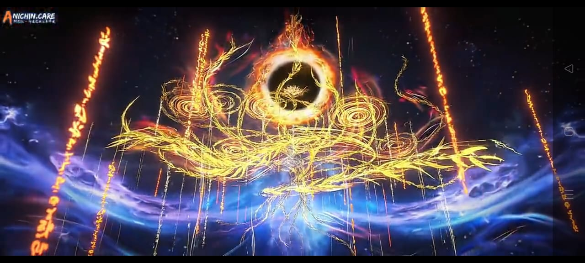
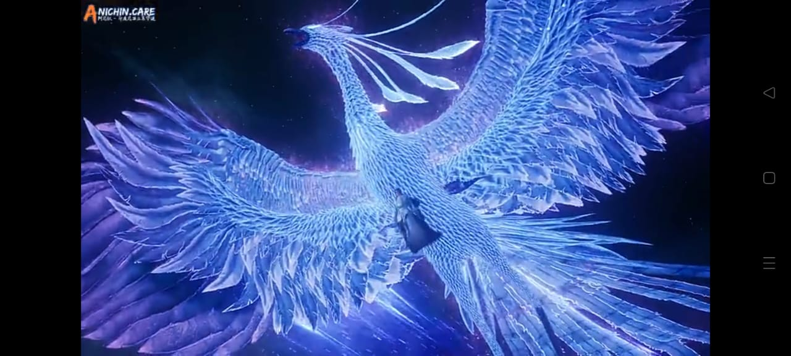
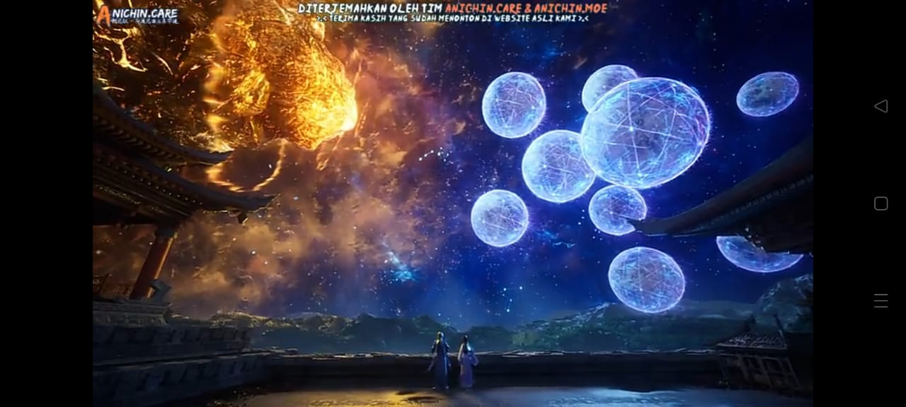
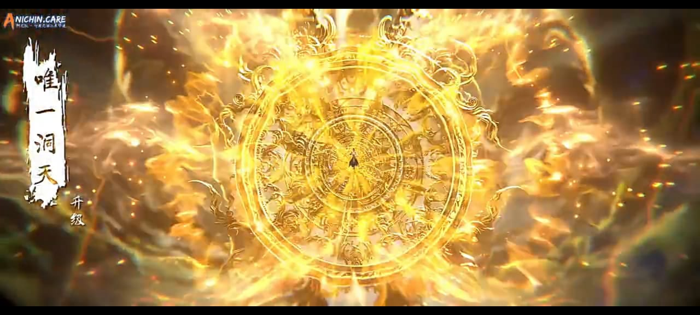
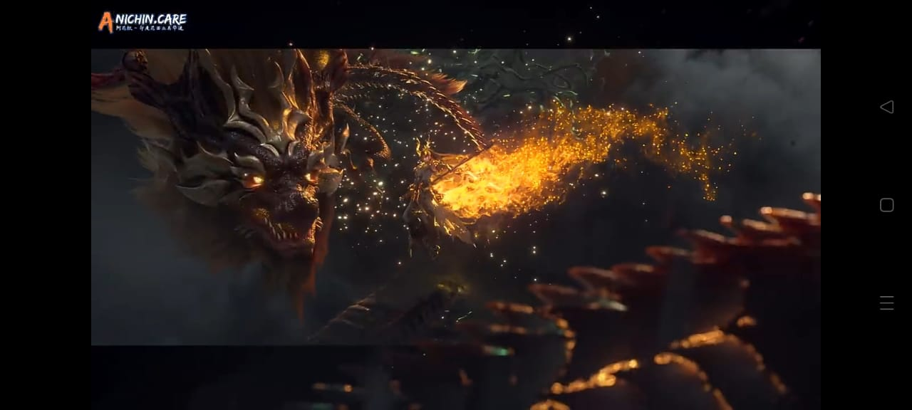
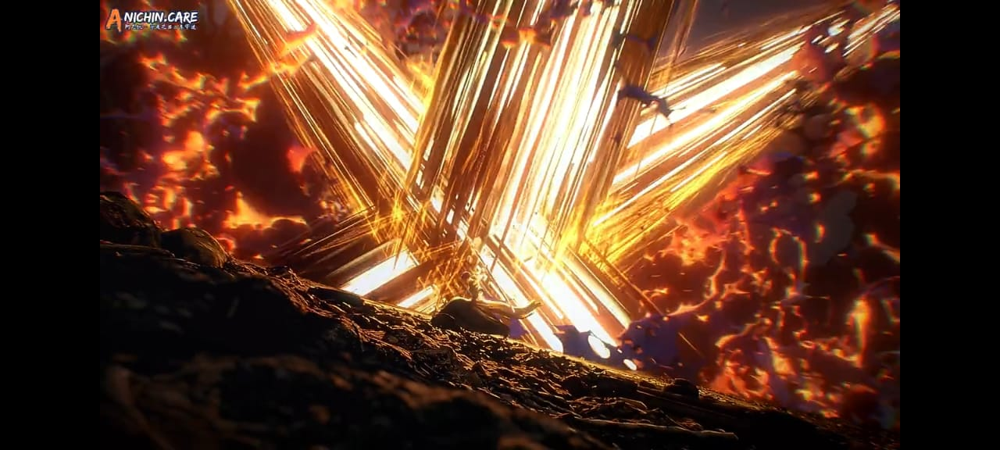
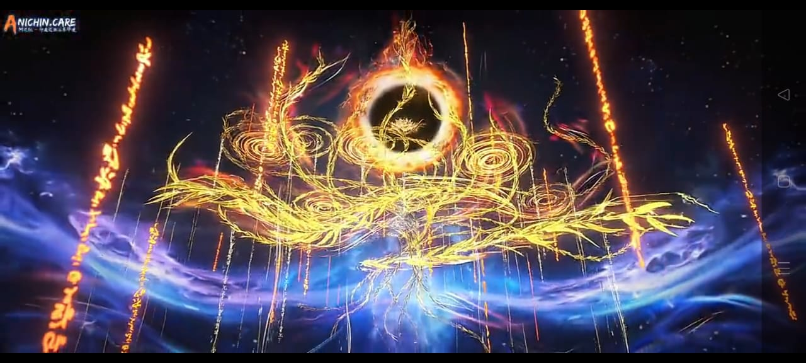
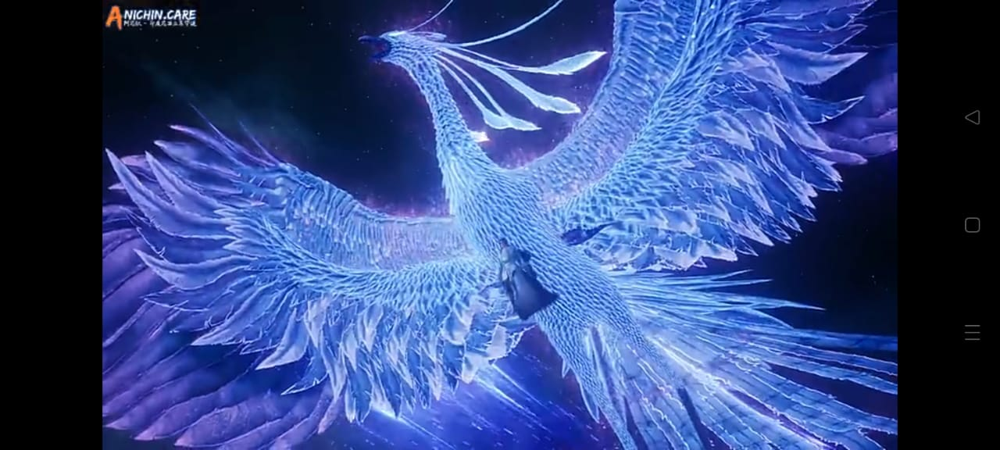
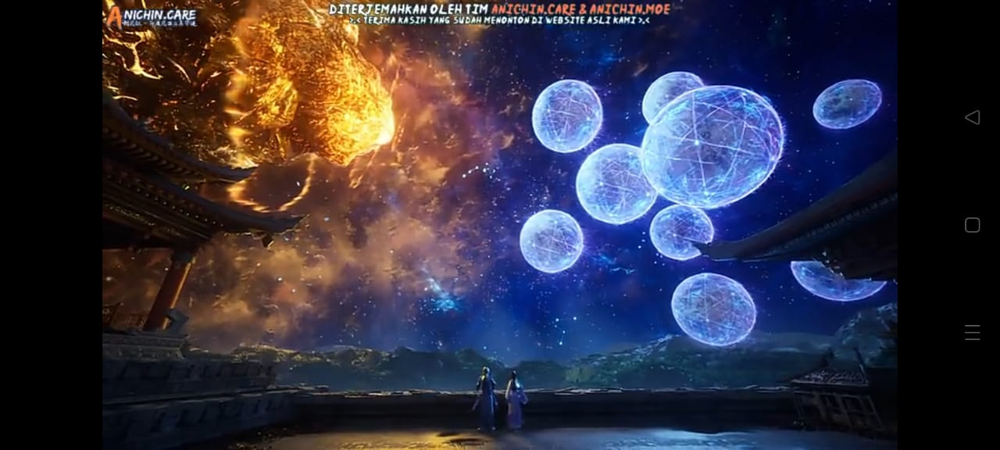
Diatas merupakan beberapa foto dari donghua-donghua yang telah saya tonton
Hai, jadi di halaman saya kali ini berisikan hobi yang saya miliki
Jadi hobi yang saya miliki, sebenarnya sangat simple, tidak ada yang unik atau berbeda, banyak sekali orang yang memiliki hobi yang sama dengan saya, dimana saya memiliki hobi menonton donghua atau animasi china, bermain game, dan berenang
Hobi yang paling sering saya lakukan atau menjadi favorit saya yaitu menonton donghua, dimana donghua merupakan sebuah animasi yang berasal dari china, dan saya mulai tertarik dengan donghua dari kelas 6 SD jika saya tidak salah ingat,
selain donghua sebenarnya saya juga menonton anime atau animasi yang berasal dari Jepang, selain itu juga saya membaca komik komik, seperti manga, manhwa, dan manhua, untuk entertainment diri saya sendiri sebenarnya ada banyak,
namun yang paling saya suka adalah menonton donghua, terkadang juga saya menonton anime, atau membaca komik komik.
Saya biasanya berganti tontonn itu dikarenakan donghua yang sedang saya tonton masih ongoing dimana, episodenya sudah habis, namun ceritanya belum selesai, jadi mau tidak mau saya menonton hal lain, untuk mengisi waktu yang kosong karena menunggu episode terbaru
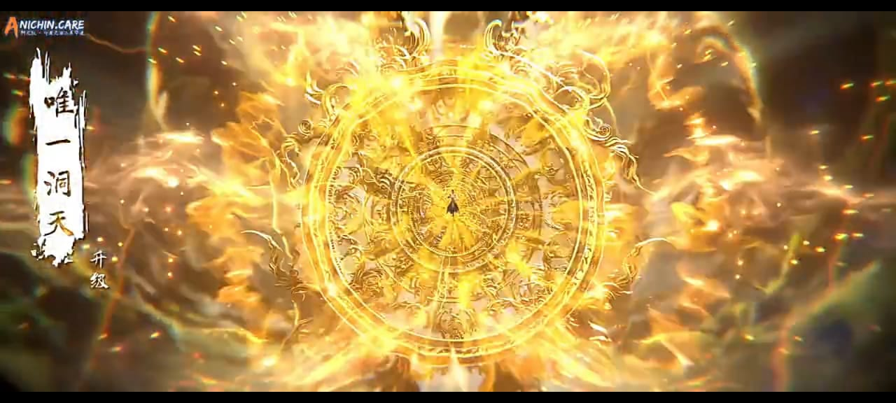
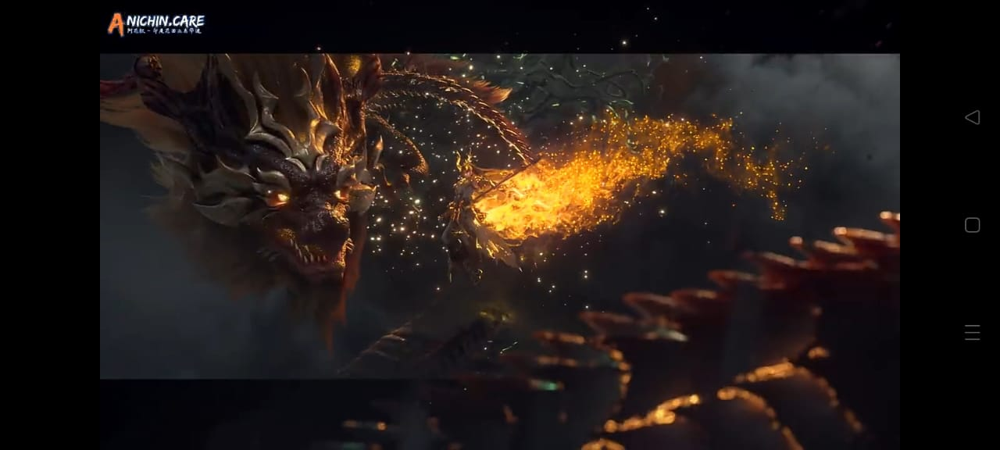
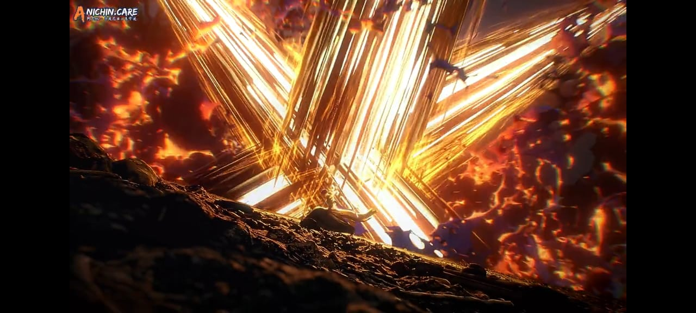
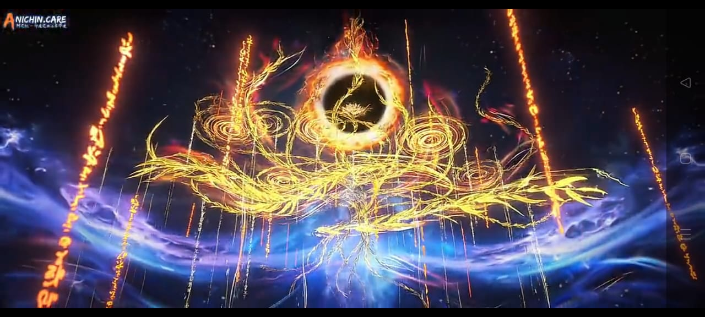
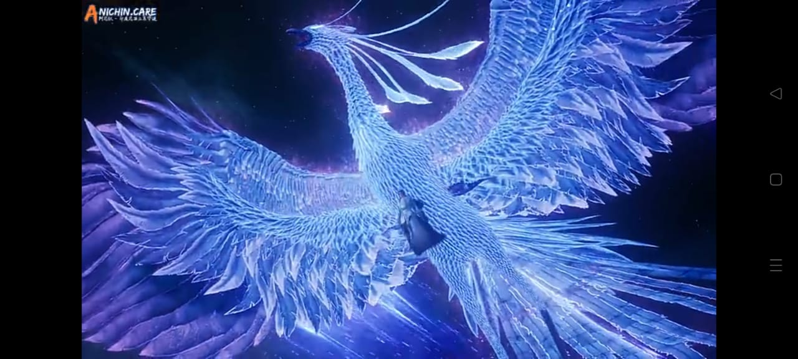
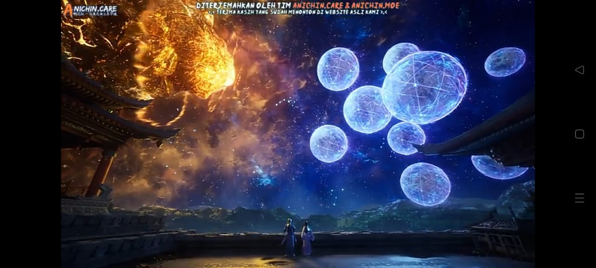
Diatas merupakan beberapa foto dari donghua-donghua yang telah saya tonton
Selain menonton donghua saya juga suka berenang dan bermain game
Akhir-akhir ini saya sangat suka untuk bergmain game dengan genre turn-based rpg, mmorpg, dan beberapa game lain yang memiliki unsur turn-based dan beberapa mekanik yang perlu diperhatikan
sebenarnya selain game rpg, saya juga suka game MOBA, atau game 5v5, seperti Mobile Legends dan yang lainnya, namun saya cukup capek bermain gamenya, selain game ini biasanya kompetitif
Jadi cukup sulit untuk dibawa santai, yang dimana jika kita santai sedikit maka kemungkinan akan diberikan ebberapa kata-kata mutiara dari tim kita,
dan juga saya capek menghadapi tim-tim yang egois, tidak mau mengalah, dan beberapa pemain darksistem lainnya, yang membuat awalnya kita bermain game karena ingin hiburan
malah menjadi wahana stress dan amarah disana, jadi akhirnya saya memutuskan untuk pindah game, yang dimana say amemilih game-game, rpg, turn-based, dan idle game
Dimana, game seperti itu merupakan game santai, yang tidak terlalu kompetitif, dan biasanya bersifat individual, tidak berkelompok dengan player lain.
Diatas merupakan, salah satu foto dari game yang telah saya mainkan
Selain itu, saya juga senang untuk berenang, saya biasanya mengajak ayah saya untuk mengantar atau berenang bersama ketika hari minggu, dan saya cukup senang jika sekolah atau kelas sedang ingin melaksanakn penilaian renang karena saya bisa berenang sendiri atau bahkan dengan beberapa teman saya
Namun yang saya cukup sesali adalah waktu renang, karena biasanya jika saya kelas saya sedang ada penilaian renang, waktu renang kami dibatasi hanya untuk sekitar 1 jam setengah saja, yang masih saya bingungkan adalah kenapa pihak kolam renang selalu membatasi waktu renang murid-murid sekolah,
padahal mereka sudah membayar kesempatan untuk bisa berenang disana, saya bisa mengerti jika setelah sekolah saya masih ada sekolah lain yang mengantri untuk melaksanakan penilaian, namun 1 kolam renang kan tidak hanya bisa digunakan untuk 1 sekolah saja melainkan untuk beberapa sekolahpuun masih bisa,
jadi setiap saya ingin berenang dengan teman saya ketika kami telah selesai penilaian renang jadi tidak bisa, karena waktunya yang keburu habis dan saya juga padahal ingin sekalian latihan renang karena sangat jarang sekali saya memiliki waktu untuk berenang, baik sendiri maupun dengan ayah saya,
jadi saya ingin menggunakan kesempatan yang telah saya beli dengan baik, namun ternyata malah ada batas waktunya, jadi pada intinya, saya suka renang